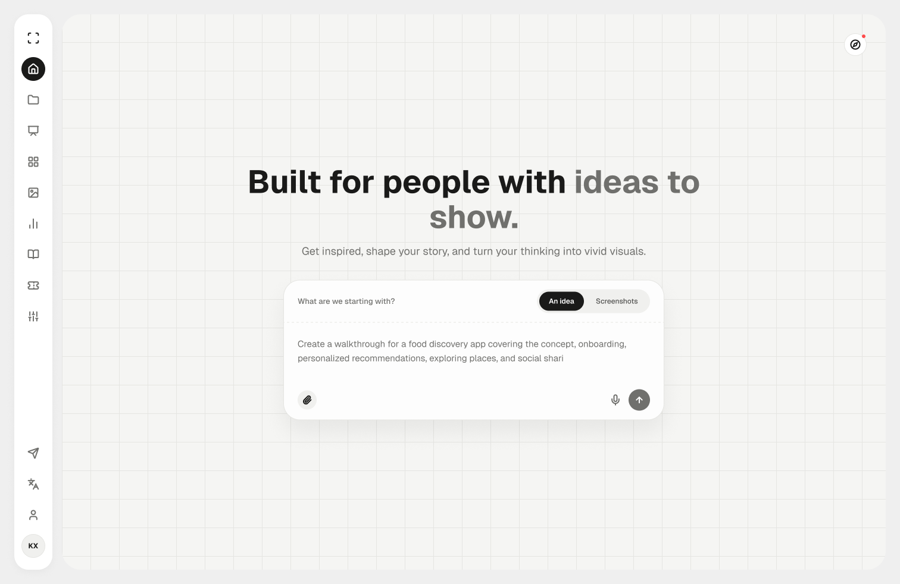
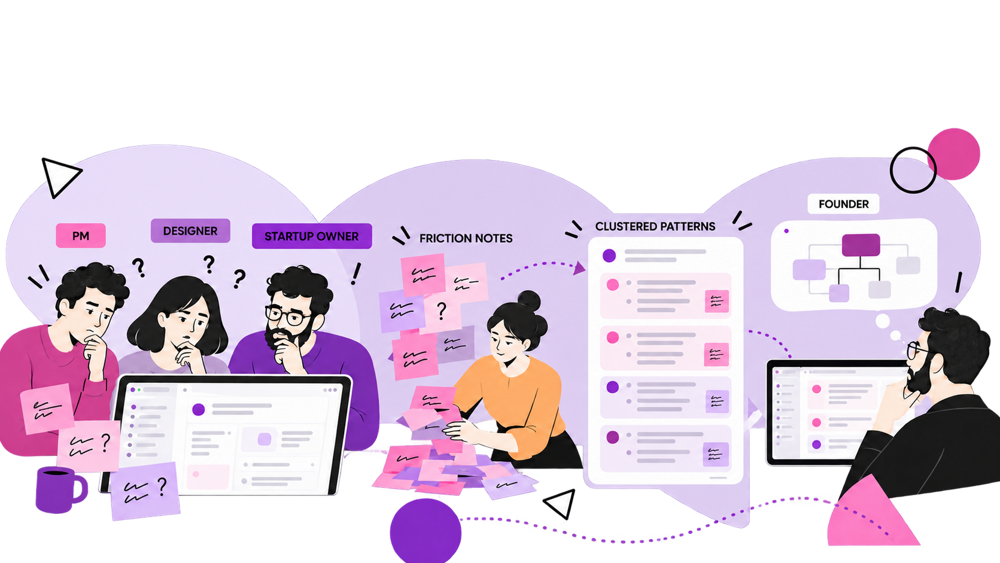
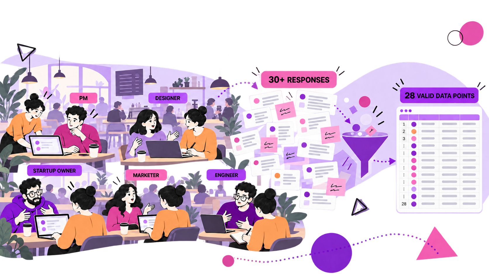
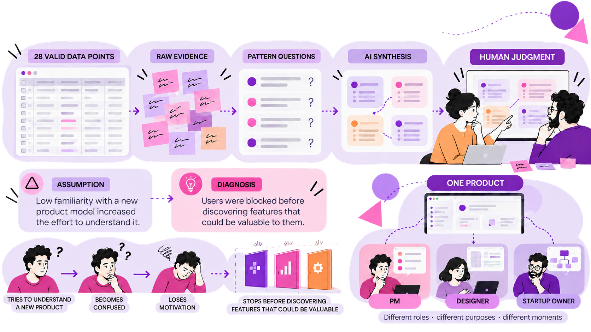

Enter as a beginner
I used the integrated workspace as a first-time startup founder and recorded every hesitation instead of explaining it away.
Vetra AI · Product strategy, research, design, and build
I joined a technical founder as the only designer. In one month, I turned first-time confusion into a product strategy—and carried that strategy through research, three focused landing pages, a redesigned workspace, and production launch.

WEEK 1 · UNDERSTAND
I used the integrated workspace as a first-time startup founder and recorded every hesitation instead of explaining it away.
Each question became a concrete note attached to the moment where value was interrupted.
The founder answered each friction point, exposing the gap between the builder’s internal model and a new user’s view.

“The builder saw one coherent system. First-time users saw unanswered questions before value.”
WEEK 1 · IMPROVE
The scan was not a usability report left on a shelf.
AI helped cluster repeated questions and propose possible responses. The founder supplied system context. I decided which recommendations were useful, what should change first, and where we still needed evidence.
WEEK 2 · LEARN

WEEK 2 · SYNTHESIZE

WEEK 2 · DIAGNOSE
Working assumption: because this product model was unfamiliar, understanding it required too much effort. Confusion reduced motivation before users reached the core capabilities.
WEEK 2 · REFRAME
Turn interface screens into a demo video for people who do not understand the product yet.
Demo videoBreak dense information into bite-sized visual explanations and presentation-ready slides.
Visual slidesUpload an image, separate it into editable layers, then move, delete, or rewrite any element.
Edit EverythingWEEK 2 · DECIDE
Find a new mental model that makes three capabilities feel coherent.
Give each audience one clear entrance, promise, and job.
THE ARGUMENT
At this stage, precision was more valuable than preserving every possibility.
FOUNDER ALIGNMENT
Keeping them together could create a uniquely powerful product.
Focused products would let us learn what each audience actually valued with less noise and lower investment risk.
WEEK 3 · DESIGN
The technology stayed connected behind the scenes. The front door became specific.
DESIGN PROCESS
AI multiplied the options. Judgment decided what deserved to ship.
WORKSTATION REDESIGN
NEW MENTAL MODEL
AESTHETIC SYSTEM
The implementation remains proprietary. This case study shares the evaluation philosophy, not the private aesthetic rulebook or prompts.
WEEK 4 · BUILD
LAUNCH
What shipped is not the end of the story.
The pivot creates a cleaner learning system: each audience now reaches one promise faster, and future behavior is easier to interpret by role and job.
REFLECTION
I did not treat the founder’s technology as the product strategy. I turned first-time confusion into shared evidence, used field research to locate the real problem, made the tradeoff visible, and carried the resulting direction from positioning to interface to production.